This study explores visuals for the three places a player goes to on the map. Energy and Water get a small, distinct 3D object, because the pin that appears when collection is ready is what players look for. The market gets a smaller object that belongs in the world, and a pin of its own, larger than the others, so it reads as a landmark. Use the switches: every combination shows on today's map, close and from high up, beside the game as it is now.
The 3D objects were generated in the style of the map's own props, cut out, and set onto captures of the game from 22 September, with the pins and the stall painted out. They are sized in map units against today's stall, which is 17 units. The pins are drawn in the approved identity. The market pin is new: the market has none today.
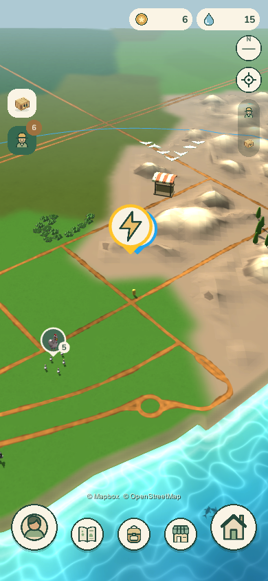
Today, closeA capture of 22 September: an Energy pin in front of a Water pin, both 64 points here. The striped stall on the rock is the market; it is 17 map units, the size of a pin at this zoom.
Concept, closeThe same view with the chosen objects and pins. The market stands where today's stall stood; Energy and Water on the rock in front.
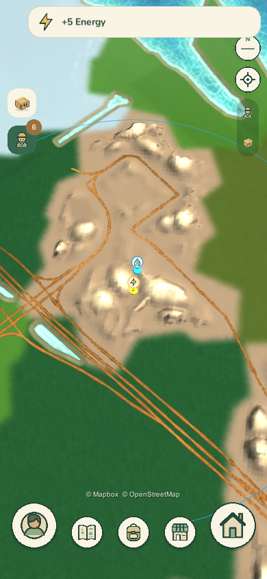
Today, from high upThe Water and Energy pins stacked on the rock in the middle; their disks are hidden under them.
Concept, from high upFrom here a small object is a few pixels; the pin does the work, and the market's larger pin still reads as the landmark.
Each about half the stall's height. Energy is the map's yellow, so each keeps a yellow part that still reads when the object is ten pixels tall.
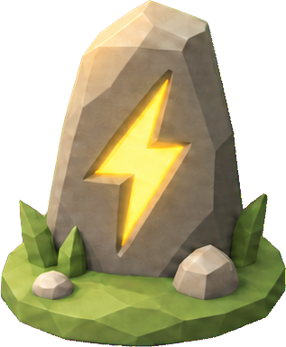
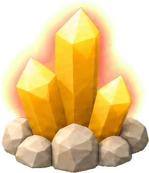
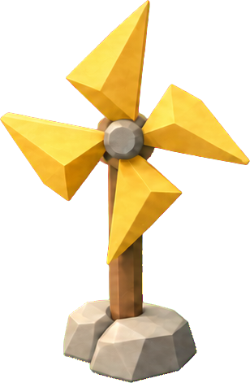
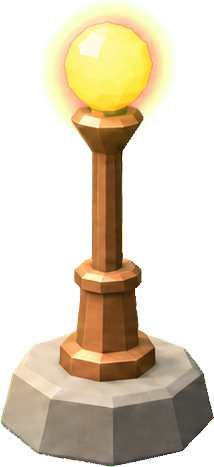
The same size as Energy. Blue water shows in each, so a Water place never reads as Energy.
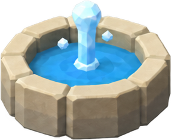
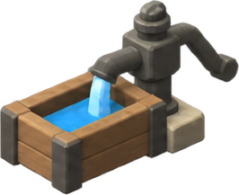
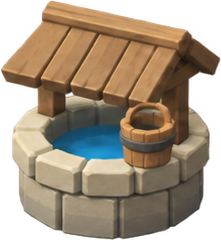
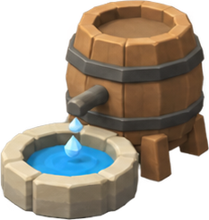
Every roof keeps today's orange-and-cream stripe, so any of them reads as a market. None is taller than today's stall; the square and the pavilion are a little wider.
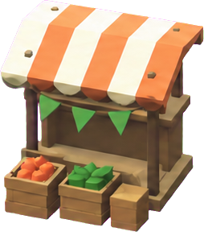
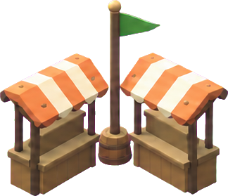
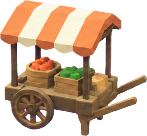
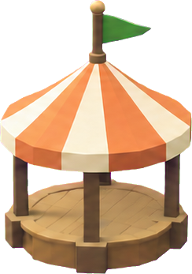
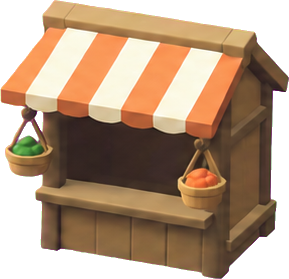
The five chosen props, modelled in Blender from these concepts by scripts, and shown here at the game's default camera tilt at one scale. Each sheet below puts the concept beside renders at the three tilts.
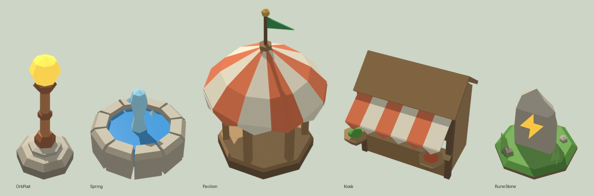
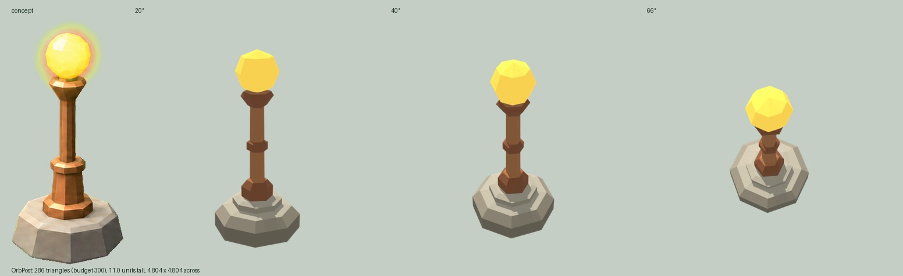
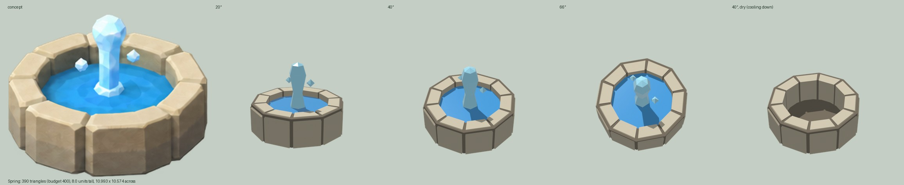
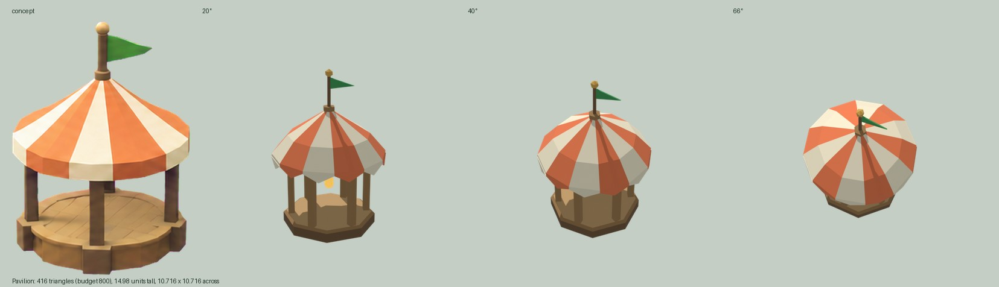
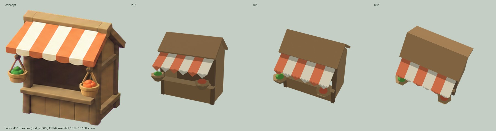
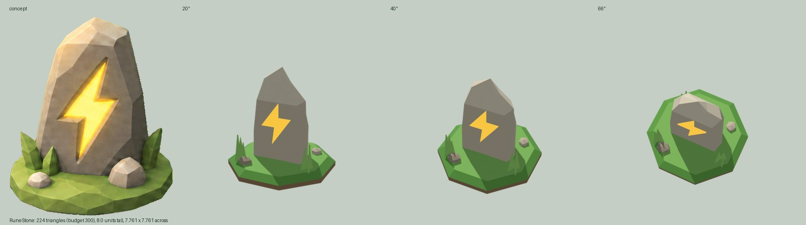
Today's pins at their size, 36 points, beside the four market pins at 1.5 ×. Each is the market's orange with the approved market symbol. The Emblem, chosen at 1.25 ×, has no number badge; the Shop sign carries the place's name, from the map data the market already uses.
The size is a choice: the Pennant at three sizes, beside an Energy pin.